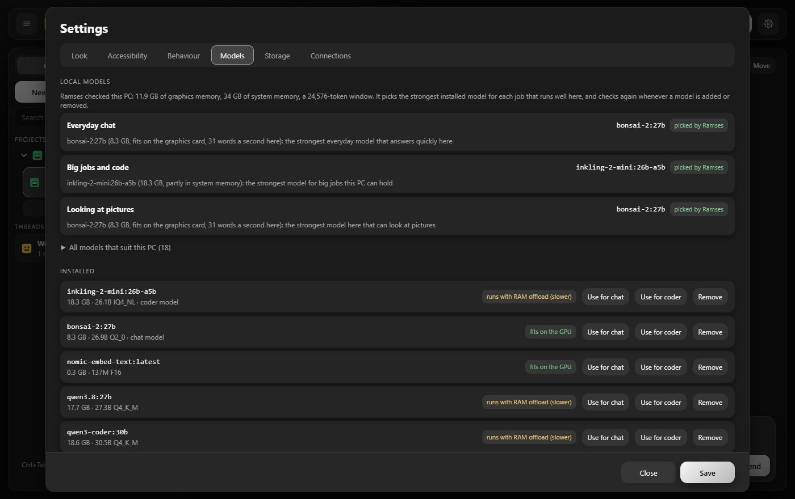

Take back control of AI.
Your assistant, on your PC.
Ramses is an AI assistant that lives on your own computer. It chats, works with your files, writes and runs code, searches the web and makes pictures, like the assistants you already know. The difference is who is in charge: it runs on your hardware, keeps your data with you, and does only as much on its own as you allow.

Helpful like the assistants you know. Owned by you.
Ramses is built around three simple ideas. None of them ask you to give anything up: you keep the convenience and gain the say.
It runs where you are
Ramses works on your own PC with models that run on your graphics card, and it keeps working offline. When a job needs more muscle, you can add an online model with your own key, from the provider you choose.
Your data stays yours
Chats, memory, boards and settings are stored on your computer as files you can read, edit, export or delete. Passwords and keys are kept in a local vault and are never sent anywhere, by design.
You set the pace
Choose how much it may do on its own, from asking before every step to simply getting on with it. It shows its plan before bigger jobs, and one key stops everything, instantly.
A capable assistant, shaped around your computer.
Fits your hardware, whatever it is
On first run, Ramses checks your graphics card, memory and space, then picks local models that suit your PC. It measures how fast each one really runs and suggests better ones when they would help. No suitable graphics card? It can work online-only with your own key.
- Separate picks for everyday chat, big jobs and pictures
- Steps aside while you play: frees your graphics card and resumes after
- Every choice can be changed in Settings

Does real work, with care
Ask a question or hand it a job. Ramses can work with files (backing them up first), PowerShell, git and Python, search the web, make pictures, run scheduled jobs, and connect to tool servers (MCP) and your own apps, with several tasks at once.
- Projects with their own threads, memory, guidelines and models
- Brainstorm boards: canvases, sticky notes, flows and task boards
- Search by meaning across your notes

Nothing hidden from you
The Context and usage window shows exactly what the model reads for each chat, how full its memory is, which models are loaded, and 30 days of use, including what any online model cost you. Nothing happens out of view.
- Memory is plain files you can read and edit
- Text in files and web pages is treated as information, never as orders
- A full accessibility set: reading font, larger targets, voice and more

Five levels of independence. You pick the one that fits.
Start cautious and loosen up as you get comfortable, or set it differently for each chat. Whatever you choose, Ramses asks for your OK with a simple card in the chat whenever it needs one.
A plan first
For multi-step work it can show you the plan and wait for a single “Go”.
A stop key
Ctrl+Alt+End stops every action and the model, from anywhere on your PC.
Rails you understand
Risky commands always ask, and it never helps get around anti-cheat, DRM or anti-tamper.
What stays on your PC.
Everything, unless you decide otherwise. Here is what that means in practice.
- Your chats
- Stored locally. They only reach an online model if you added a key and let that question go online.
- Your secrets
- Kept in an encrypted local vault and removed from anything that goes online. This one can’t be switched off.
- Your memory
- Plain files in your own folder. Read them, edit them, export them or delete them.
- Web search
- If you leave it on, only the search words are sent.
- Your spending
- Online use is shown in a live cost meter, with an optional monthly limit.
- Telemetry
- None. Ramses doesn’t send usage data back to anyone.
What’s new.
A new look, a smarter model and a round of fixes. Your chats, settings and memory carry over when you install it over an earlier version.
- Styles that look different
- Glass, Aurora, Bold, Neon, Terminal and Soft were rebuilt from the ground up, and two new ones join them: Paper, a light style with a serif for long reading, and Blueprint.
- A smarter model
- The Ramses model scores 32 of 33 on its task test, about twice as fast as before. A built-in calculator makes sums exact, and searches report counts.
- Print or PDF
- Print any document or answer, or save it as a PDF. Only that content prints, in plain ink on white.
- Fixes
- Leaving Ramses on Brainstorm no longer breaks its buttons on the next start. Phone access works fully again, and updates arrive at a third of the size.
Up and running in a few minutes.
- Install OllamaFor local models, install Ollama (free). Without it, Ramses works with an online key.
- Download and installUnzip and run
Install Ramses.cmd. It installs for your account only, no administrator rights needed. If Windows warns about an unknown publisher, choose More info, then Run anyway. - Follow the setupIt explains each choice, checks your hardware and offers to download the models picked for your PC.
- Start askingTake the short tour, or skip it. Type in the box, drop in a file, or press Speak.
What you need.
System
Windows 10 or 11, 64-bit. Nothing else to install for the app itself: .NET is built in. Linux and macOS are planned.
Local models
Ollama (free). An NVIDIA graphics card with 8 GB or more works best; Ramses picks smaller models for smaller cards and works online-only without one.
Space
About 300 MB for the app. Models take 2 to 20 GB each, and the setup shows the total against your free space before downloading.
Good to know.
Is it really free?
Yes. Ramses is free and open source under the MIT licence, and local models are free too. If you add an online key, that provider charges you for what you use, and Ramses can stop at a monthly limit you set.
Is it as smart as the big online assistants?
Local models are very capable for everyday work, but the largest online models are still stronger at the hardest tasks. That’s why Ramses can hand a hard job to an online model with your own key, only when you allow it.
Does it send my chats anywhere?
Not unless you add an online key and let a question go online. Everything else stays on your PC. Web search, if left on, sends only the search words. Passwords, keys and tokens are removed before anything goes online, always.
Which models does it use?
Any model from Ollama locally, and your choice of online provider. Ramses checks your hardware, picks the best one it has for each job, and suggests downloads that would do better. You can change every pick in Settings.
Can I rename it?
Yes. Give your assistant any name and colour theme in the setup or in Settings. The app, its window and its shortcuts can take that name too.
Windows warns about the installer
The app isn’t code-signed yet, so SmartScreen shows “unknown publisher” (More info, then Run anyway). You can check the download against the SHA-256 shown under the button.
Where is my data, and how do I remove it?
Everything lives in %LOCALAPPDATA%\Ramses\data: threads, memory, boards, settings and the encrypted key vault. Uninstall Ramses.cmd removes the app and keeps your data unless you delete that folder.
Is it finished?
Version 1.0 is out and in daily use, and it’s still being actively developed. Phone access over a private connection and voice are on the roadmap.
An AI assistant that answers to you.
Free, open source and ready for Windows. Install it, try it at your own pace, and keep the controls in your hands.